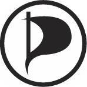

Over de Piratenpartij Nijmegen

De Piratenpartij Nijmegen zet de ideën en standpunten van wereldwijde Piratenpartijen om naar lokale issues.
Om een beeld te vormen, kun je eens kijken waar de landelijke, Nederlandse piratenpartij voor staat. We zijn overigens helemaal onafhankelijk van die landelijke partij en bovendien is Nijmegen iets heel anders dan Den Haag, dus verwacht wel dat onze uitgewerkte punten zullen afwijken.
We zijn nog een heel jonge partij en zijn daarom druk in de weer om deze standpunten vast te stellen. Jou stem daarin is heel belangrijk. Of het nu gaat over de iPads van de gemeenteraadsleden, minder (of juist meer) cameratoezicht, gare parkeermeters of losse stoeptegels: jou ideeën en meningen zijn welkom: